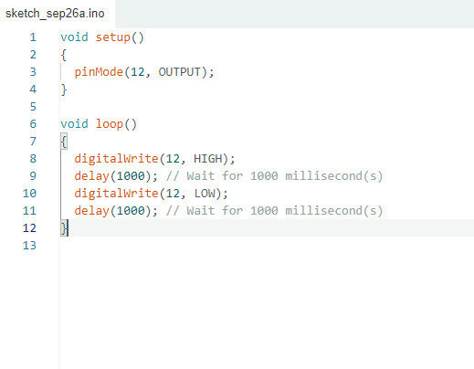

O que é uma IDE? Uma IDE (Ambiente de Desenvolvimento Integrado) é uma ferramenta que reúne editor de código, compilador e depurador em uma única interface, facilitando o desenvolvimento de software. Exemplos incluem Visual Studio e Eclipse.
fonte: Arduino IDE